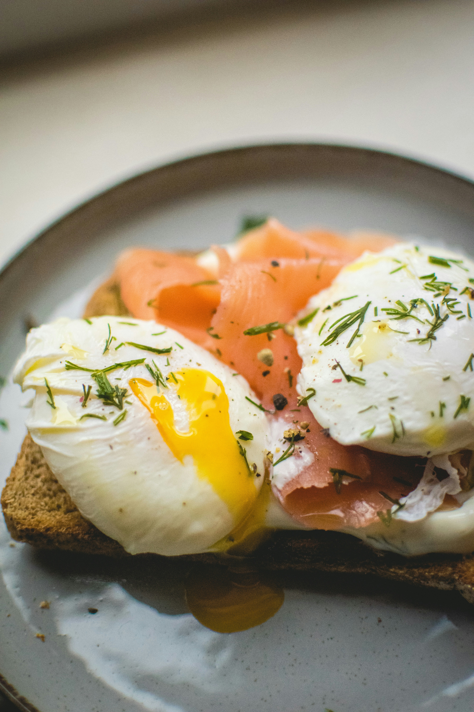
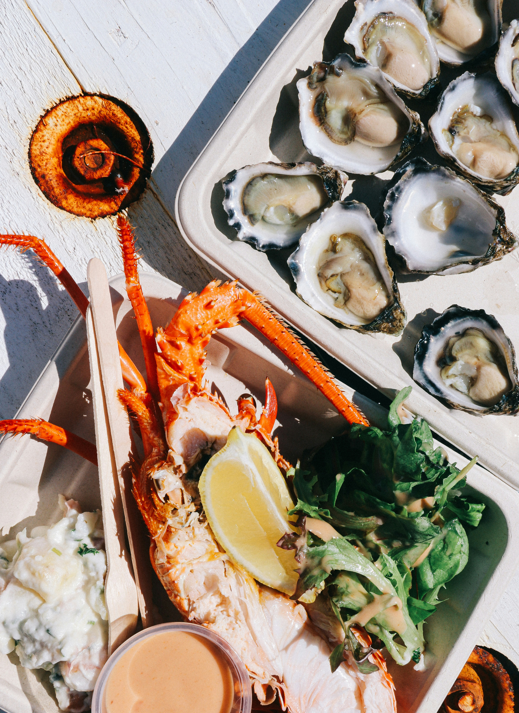
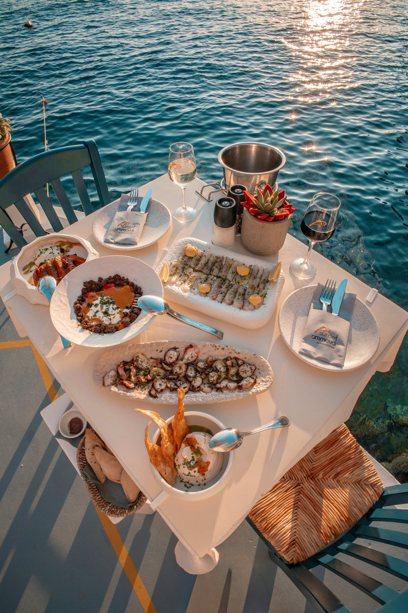

Where the land meets the Sea
At Tidal Table, we serve ocean-to-table seafood crafted daily from local morning catches, wild-caught specialties, and seasonal coastal ingredients. Experience panoramic waterfront views, wood-fired flavors, and an effortless atmosphere designed for long evenings and good company.
Brunch

Dinner

Special Occasions

About Tidal Table
Tidal Table began with a simple belief: the best meals are defined by the tide. Born out of a deep reverence for coastal living and culinary craftsmanship, our concept was created to celebrate the constant rhythm of the sea—where every catch tells a story and every season brings a new horizon of flavor. What started as a shared passion for high-quality, responsibly sourced seafood has grown into a coastal sanctuary for food lovers. We strip away the pretense and focus on what truly matters: vibrant ingredients, fire, season, and time. Every plate served is a direct nod to the waters that sustain us and the dedicated regional fisheries that work them.
Our Philosophy
- Ocean-to-Table Freshness: We partner with trusted local fisheries and coastal purveyors who practice responsible harvesting, ensuring that every dish honors the marine ecosystem.
- Craft & Creativity:Our kitchen blends classic seafood preparations with modern culinary techniques, crafting flavors that are both adventurous and deeply comforting.
- Community & Connection: Beyond the food, Tidal Table is a gathering place—a spot to slow down, share stories, and create lasting memories over an incredible meal.